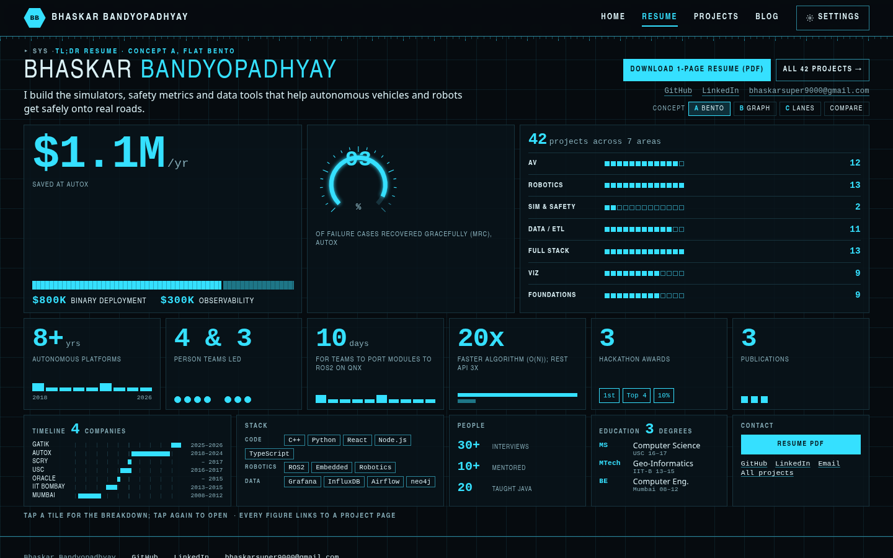
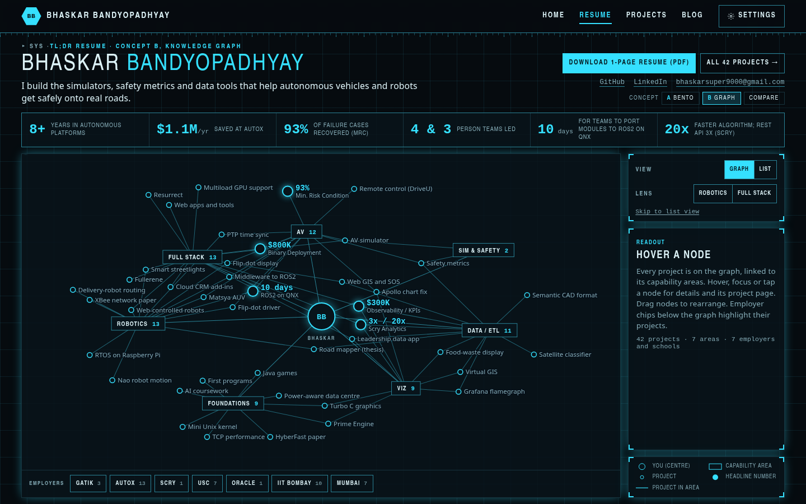

Prototype A7
TL;DR resume: two concepts
Same data (data.js: 42 projects, 7 areas, 7 employers and schools), same HUD language, same settings panel. Every figure, tile, node and mark links to a project page. Pick one to compare.
Flat bento

Sixteen instrument tiles: big number, label, tiny gauge or ruler. Hover or focus a tile for its breakdown; each line links to a project.
Best at: 20-second scan, phones, accessibility.
Gives up: shows no relationships; least surprising.
Knowledge graph

You at the centre, capability areas around you, all 42 projects visible and draggable. Employer chips highlight their projects.
Best at: memorability, showing connections.
Gives up: needs interaction before it says much; heaviest on touch and for assistive tech.
Params: ?theme=light|dark &accent=0-5 · A ?open=saved|mrc|years|teams|ros2|scry|awards|papers|stack|people|edu · B ?focus=<id> &area=<id> &emp=<id> &lens=robotics|fullstack &view=list